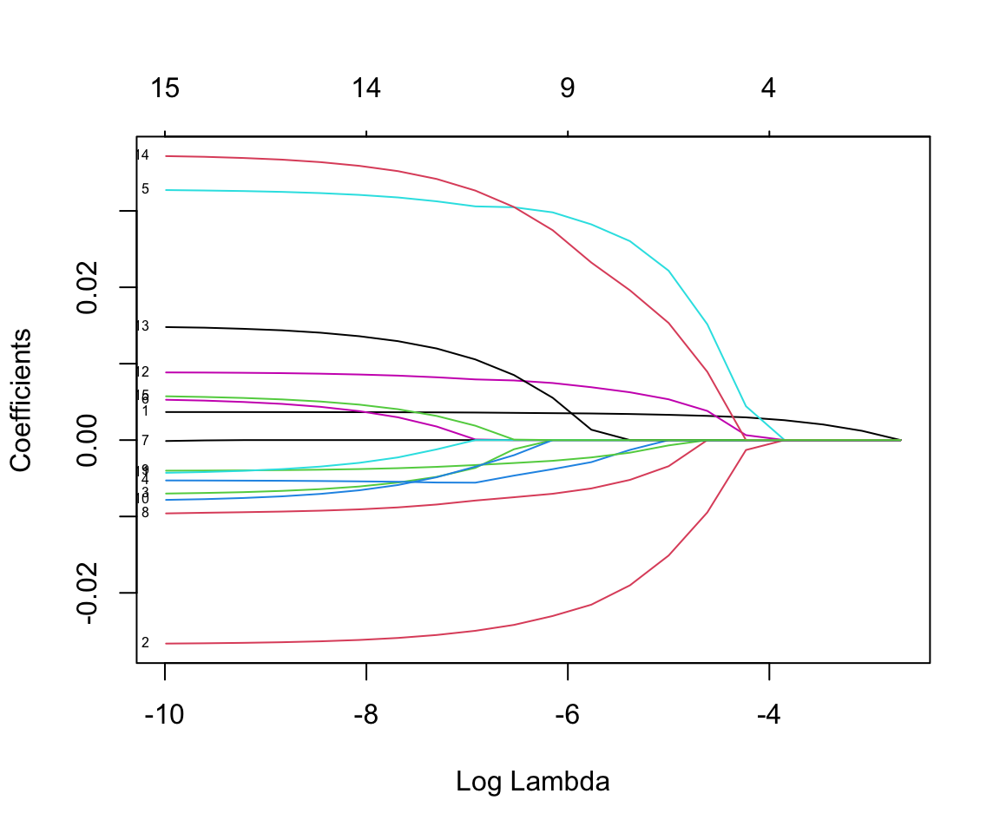
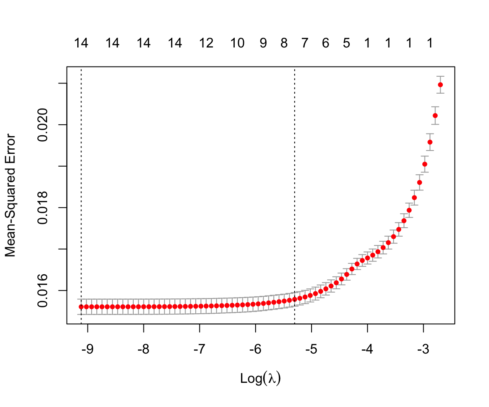
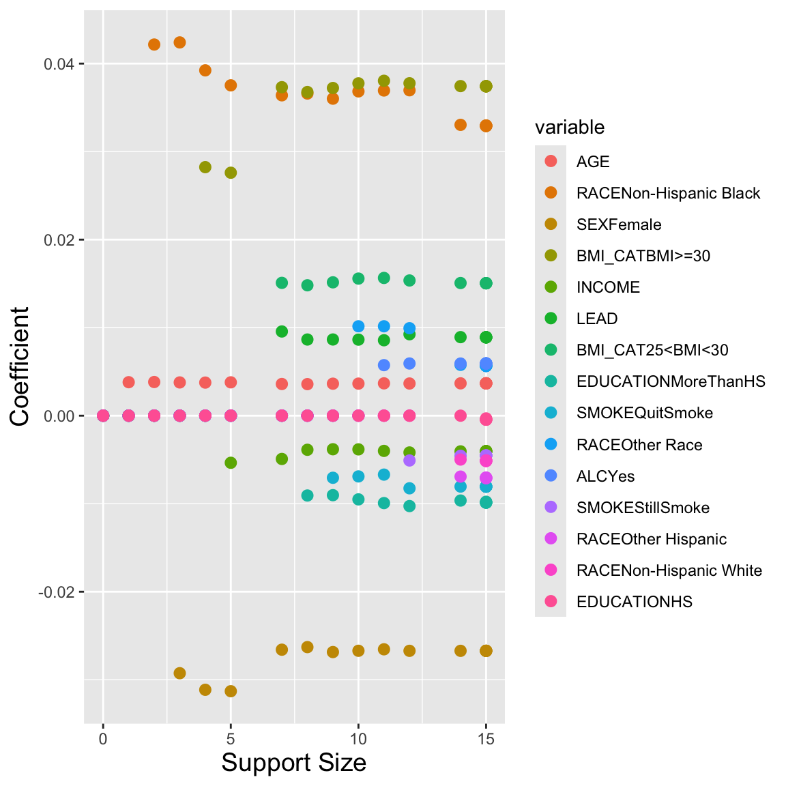
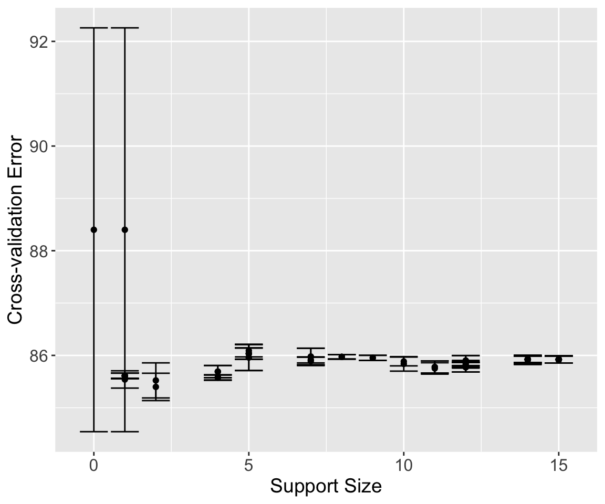

library(HDSinRdata)
library(tidyverse)
library(glmnet)
library(L0Learn)15 Model Selection
In Chapter 13 and Chapter 14, we included one simple method for model selection, stepwise selection. This chapter expands upon our model selection tools in R by focusing on regularized regression. The two packages we cover are glmnet (Friedman, Tibshirani, and Hastie 2010) and L0Learn (Hazimeh, Mazumder, and Nonet 2023). These two packages focus on different types of model regularization.
To demonstrate these packages, we use the same motivating example as in Chapter 13. Recall, that the NHANESsample dataset contains lead, blood pressure, BMI, smoking status, alcohol use, and demographic variables from NHANES 1999-2018. Our focus is looking at the association between blood lead levels and systolic blood pressure. We first create a single systolic blood pressure by averaging across all measurements. We also transform lead with a log transformation before dropping variables we want to exclude from our analysis.
# load in data
data(NHANESsample)
# transform SBP and lead
NHANESsample$SBP <-
rowMeans(NHANESsample[c("SBP1", "SBP2", "SBP3", "SBP4")],
na.rm=TRUE)
NHANESsample$LEAD <- log(NHANESsample$LEAD)
# remove variables not to include in the model
nhanes <- NHANESsample %>%
select(-c(ID, HYP, LEAD_QUANTILE, DBP1, DBP2, DBP3, DBP4,
SBP1, SBP2, SBP3, SBP4, YEAR)) %>%
na.omit()
# convert to factors
nhanes$SEX <- factor(nhanes$SEX)
nhanes$RACE <- factor(nhanes$RACE)
nhanes$EDUCATION <- factor(nhanes$EDUCATION)
nhanes$BMI_CAT <- factor(nhanes$BMI_CAT)
nhanes$ALC <- factor(nhanes$ALC)15.1 Regularized Regression
Suppose we have a numeric data matrix \(X \in \mathbb{R}^{n \times p}\) and outcome vector \(y \in \mathbb{R}^n\). We let \(x_i\) denote the vector representing the \(i\)th row of \(X\). This corresponds to the \(i\)th observation. When we refer to regularized regression, we are referring to solving the following optimization problem that minimizes the average loss plus a penalty term.
\[ \min_{ (\beta_0, \beta) \in \mathbb{R}^{p+1}} \frac{1}{n} \sum_{i=1}^n l(y_i, \beta_0 + \beta^T x_i) + \text{Pen}(\beta) \tag{15.1}\]
The function \(l(y_i, \beta_0 + \beta^T x_i)\) represents the loss function. For linear regression, this corresponds to the squared error \((y_i - \beta_0 - \beta^T x_i)^2\). For logistic regression, this loss corresponds to the logistic loss function.
The penalty terms we implement include the following:
L0 Norm: \(||\beta ||_0 = \sum_{j=1}^p 1(\beta_j \neq 0)\), the number of non-zero coefficients,
L1 Norm: \(||\beta ||_1 = \sum_{j=1}^p |\beta_j|\), the sum of absolute values of the coefficients, and
Squared L2 Norm: \(||\beta ||_2^2 = \sum_{j=1}^p \beta_j^2\), the sum of squared coefficients.
15.2 Elastic Net
We first consider L1 and L2 regularization. In particular, consider the following penalty term, referred to as elastic net regularization,
\[ \lambda \left[ \alpha ||\beta||_1 + (1-\alpha) ||\beta||^2_2 \right], \]
where \(\lambda\) is a complexity parameter and \(\alpha\) controls the balance between the two norms. A model with only L1 regularization (\(\alpha = 1\)) corresponds to lasso regression while a model with only L2 regularization (\(\alpha=0\)) corresponds to ridge regression. Note that the penalty depends on the scale of \(X\) and we typically assume each column has been standardized.
The glmnet package implements elastic net regularization. It assumes our data are in the form described previously. Therefore, we first create our numeric data matrix x and output vector y. Some of our variables are categorical, so in order to create a numeric matrix we need to one-hot encode them. We can do so using the model.matrix() function which takes in a formula and a data frame and creates the corresponding design matrix including creating dummy variables from factor variables and implementing any transformations. Note that we drop the first generated column which corresponds to the intercept. The transformation to our outcome does not impact the result.
x <- model.matrix(log(SBP) ~ ., nhanes)[, -1]
head(x)
#> AGE SEXFemale RACEOther Hispanic RACENon-Hispanic White
#> 1 77 0 0 1
#> 2 49 0 0 1
#> 3 37 0 0 1
#> 4 70 0 0 0
#> 5 81 0 0 1
#> 6 38 1 0 1
#> RACENon-Hispanic Black RACEOther Race EDUCATIONHS EDUCATIONMoreThanHS
#> 1 0 0 0 1
#> 2 0 0 0 1
#> 3 0 0 0 1
#> 4 0 0 0 0
#> 5 0 0 0 0
#> 6 0 0 0 1
#> INCOME SMOKEQuitSmoke SMOKEStillSmoke LEAD BMI_CAT25<BMI<30
#> 1 5.00 0 0 1.609 0
#> 2 5.00 1 0 0.470 1
#> 3 4.93 0 0 0.875 0
#> 4 1.07 1 0 0.470 1
#> 5 2.67 0 1 1.705 1
#> 6 4.52 0 1 0.405 1
#> BMI_CATBMI>=30 ALCYes
#> 1 0 1
#> 2 0 1
#> 3 1 1
#> 4 0 1
#> 5 0 1
#> 6 0 1Our outcome vector corresponds to log transformed systolic blood pressure.
y <- log(nhanes$SBP)The glmnet() function fits an elastic net regression model. This requires us to specify our input matrix x and response variable y. Additionally, we can specify the assumed distribution for y using the family argument. In our subsequent example, we fit this model with \(\alpha = 1\) and 25 different values of \(\lambda\). By default, glmnet() sets \(\alpha\) to 1 and creates a grid of 100 different values of lambda. It is also the default to standardize x, which we can turn off by specifying standardize = FALSE in our function call.
mod_lasso <- glmnet(x, y, family = "gaussian", alpha = 1,
nlambda = 25)If we plot the resulting object, we can see the model coefficients for each resulting model by plotting how the coefficient for each variable changes with the value of \(\lambda\). The plot() function by default plots these against the penalty term but we can also specify to plot against the \(\lambda\) values on the log scale. The label argument adds a label to each line, though these are often hard to read. The numbers at the top of the plot indicate how many non-zero coefficients were included in the model for different \(\lambda\) values. Read the documentation ?glmnet to see the other possible inputs including the penalty.factor and weights arguments.
plot(mod_lasso, xvar = "lambda", label = TRUE)
We can also print our results. This prints a matrix with the values of \(\lambda\) used. For each \(\lambda\) value we can also see the number of non-zero coefficients (Df) and the percent deviance explained (%dev).
print(mod_lasso)
#>
#> Call: glmnet(x = x, y = y, family = "gaussian", alpha = 1, nlambda = 25)
#>
#> Df %Dev Lambda
#> 1 0 0.0 0.0674
#> 2 1 11.6 0.0459
#> 3 1 17.0 0.0313
#> 4 1 19.5 0.0213
#> 5 4 21.0 0.0145
#> 6 5 23.1 0.0099
#> 7 7 24.3 0.0067
#> 8 8 24.9 0.0046
#> 9 9 25.2 0.0031
#> 10 9 25.4 0.0021
#> 11 12 25.6 0.0014
#> 12 13 25.6 0.0010
#> 13 14 25.7 0.0007
#> 14 14 25.7 0.0005
#> 15 14 25.7 0.0003
#> 16 14 25.7 0.0002
#> 17 14 25.7 0.0001
#> 18 14 25.7 0.0001
#> 19 15 25.7 0.0001
#> 20 15 25.7 0.0000We can extract the model for a particular value of \(\lambda\) using the coef() function. The argument s specifies the value of \(\lambda\). For the particular value of \(\lambda\) chosen in the following code, only age has a non-zero coefficient. Note that the coef() function returns the coefficients on the original scale.
coef(mod_lasso, s = 0.045920)
#> 16 x 1 sparse Matrix of class "dgCMatrix"
#> s1
#> (Intercept) 4.75241
#> AGE 0.00121
#> SEXFemale .
#> RACEOther Hispanic .
#> RACENon-Hispanic White .
#> RACENon-Hispanic Black .
#> RACEOther Race .
#> EDUCATIONHS .
#> EDUCATIONMoreThanHS .
#> INCOME .
#> SMOKEQuitSmoke .
#> SMOKEStillSmoke .
#> LEAD .
#> BMI_CAT25<BMI<30 .
#> BMI_CATBMI>=30 .
#> ALCYes .We can also use the predict() function to predict blood pressure for this particular model. In the function call, we have specified our value of \(\lambda\) as well as our data matrix x as the data to predict on.
pred_lasso <- predict(mod_lasso, s = 0.045920, newx = x)This shows our observed model fit for a fairly high penalty term. In order to choose the best value of \(\lambda\), we use 5-fold cross-validation. First, we randomly assign each observation to one of five folds using the sample() function. We can see that this splits the data into folds of roughly equal size.
set.seed(1)
foldid <- sample(1:5, size = nrow(x), replace = TRUE)
table(foldid)
#> foldid
#> 1 2 3 4 5
#> 6081 5967 6048 6188 6121Next, we call the cv.glmnet() function which implements k-fold cross-validation across a grid of \(\lambda\) values. Similar to before, we specified x, y, and alpha = 1. This time, we also include the measure to use for cross-validation (mse indicates mean squared error) and provide the fold vector foldid. If you do not want to provide folds, you can instead use the nfolds argument to specify the number of folds desired and the cv.glmnet() function will create them. Plotting the returned object shows us the estimated mean squared error for different values of \(\lambda\) as well as error bars for each estimate. Similar to before, it also shows the number of non-zero coefficients at the top.
cv_lasso <- cv.glmnet(x, y, foldid = foldid, alpha = 1,
type.measure = "mse")
plot(cv_lasso)
There are two vertical dashed lines included in the plot. These correspond to two values of \(\lambda\) that are stored in our object. The first is lambda.min. This corresponds to the \(\lambda\) value with the lowest estimated mean squared error. The other is lambda.1se. This corresponds to the largest \(\lambda\) value whose estimated mean squared error is within one standard error of the lowest value. As indicated in the plot, this corresponds to a model with fewer included coefficients and higher regularization.
We use the lambda.min value as our chosen \(\lambda\) value. To extract the coefficients corresponding to this \(\lambda\) value we again use the coef() function. However, this \(\lambda\) might not be one of the initial 25 used for our mod_lasso object. In this case, the coef() function uses linear interpolation to get the estimated coefficients. If we want to refit our model for this particular value of \(\lambda\), we can instead specify the argument exact = TRUE and provide x and y.
lasso_coef <- coef(mod_lasso, s = cv_lasso$lambda.min,
exact = TRUE, x = x, y = y)
lasso_coef
#> 16 x 1 sparse Matrix of class "dgCMatrix"
#> s1
#> (Intercept) 4.63458
#> AGE 0.00367
#> SEXFemale -0.02652
#> RACEOther Hispanic -0.00677
#> RACENon-Hispanic White -0.00531
#> RACENon-Hispanic Black 0.03257
#> RACEOther Race 0.00493
#> EDUCATIONHS .
#> EDUCATIONMoreThanHS -0.00942
#> INCOME -0.00396
#> SMOKEQuitSmoke -0.00753
#> SMOKEStillSmoke -0.00397
#> LEAD 0.00880
#> BMI_CAT25<BMI<30 0.01452
#> BMI_CATBMI>=30 0.03688
#> ALCYes 0.00547We now repeat the same process for a model with \(\alpha = 0\) and \(\alpha = 0.5\). In this case, we call the glmnet() function with our chosen \(\lambda\) value to find the coefficients. This is equivalent to what we did for our lasso model. Last, we create a data frame with the estimated coefficients for each model. The coef() function returns a matrix, so this requires converting these to numeric vectors.
# cross-validation using same folds
cv_ridge <- cv.glmnet(x, y, foldid = foldid, alpha = 0,
type.measure = "mse")
cv_elastic <- cv.glmnet(x, y, foldid = foldid, alpha = 0.5,
type.measure = "mse")
# Refit model on full data with chosen lambda
mod_ridge <- glmnet(x, y, alpha = 0, lambda = cv_ridge$lambda.min)
mod_elastic <- glmnet(x, y, alpha = 0.5, lambda = cv_ridge$lambda.min)
# extract coefficients for a table
res_coef <- data.frame(name = c("Intercept", colnames(x)),
lasso = round(as.numeric(lasso_coef), 3),
ridge = round(as.numeric(coef(mod_ridge)), 3),
elastic = round(as.numeric(coef(mod_elastic)),
3))
res_coef
#> name lasso ridge elastic
#> 1 Intercept 4.635 4.646 4.650
#> 2 AGE 0.004 0.003 0.003
#> 3 SEXFemale -0.027 -0.025 -0.020
#> 4 RACEOther Hispanic -0.007 -0.007 0.000
#> 5 RACENon-Hispanic White -0.005 -0.005 -0.002
#> 6 RACENon-Hispanic Black 0.033 0.031 0.027
#> 7 RACEOther Race 0.005 0.004 0.000
#> 8 EDUCATIONHS 0.000 0.000 0.000
#> 9 EDUCATIONMoreThanHS -0.009 -0.010 -0.006
#> 10 INCOME -0.004 -0.004 -0.002
#> 11 SMOKEQuitSmoke -0.008 -0.006 0.000
#> 12 SMOKEStillSmoke -0.004 -0.005 0.000
#> 13 LEAD 0.009 0.011 0.008
#> 14 BMI_CAT25<BMI<30 0.015 0.014 0.000
#> 15 BMI_CATBMI>=30 0.037 0.035 0.022
#> 16 ALCYes 0.005 0.004 0.000The coefficients between the models are not so different. We can also compare their mean squared errors, which are also similar. Since our lasso model was fit on a grid of \(\lambda\) values, we again have to specify this value.
mean((nhanes$SBP - exp(predict(mod_lasso, newx = x,
s = cv_lasso$lambda.min)))^2)
#> [1] 268
mean((nhanes$SBP - exp(predict(mod_ridge, newx = x)))^2)
#> [1] 268
mean((nhanes$SBP - exp(predict(mod_elastic, newx = x)))^2)
#> [1] 27015.3 Best Subset
The second package we introduce in this chapter is one that allows us to fit models with an L0 penalty term. The package L0Learn considers penalties of the following forms.
L0 only: \(\lambda ||\beta||_0\)
L0L1: \(\lambda ||\beta ||_0 + \gamma ||\beta||_1\)
L0L2: \(\lambda ||\beta||_0 + \gamma ||\beta ||_2^2\)
To fit a model with an L0 penalty term, we use the L0Learn.fit() function. Similar to glmnet(), we need to specify our input matrix x and response vector y as well as our penalty using the penalty argument. We can also specify a number of \(\lambda\) values to consider nLambda and specify the family through the loss function loss.
mod_l0 <- L0Learn.fit(x, y, penalty = "L0", loss = "SquaredError",
nLambda = 20)Plotting the returned object also shows how the coefficients for each variable change with the penalty term, given by the support size or number of non-zero coefficients in this case. We can also print the returned object to see the different values of \(\lambda\) used and the corresponding number of included variables.
plot(mod_l0)
print(mod_l0)
#> lambda gamma suppSize
#> 1 1.08e-01 0 0
#> 2 1.07e-01 0 1
#> 3 6.51e-03 0 2
#> 4 5.00e-03 0 3
#> 5 4.22e-03 0 4
#> 6 1.75e-03 0 5
#> 7 5.36e-04 0 7
#> 8 3.23e-04 0 8
#> 9 1.92e-04 0 9
#> 10 1.42e-04 0 10
#> 11 1.04e-04 0 11
#> 12 6.80e-05 0 12
#> 13 1.75e-05 0 14
#> 14 4.06e-07 0 15
#> 15 3.94e-07 0 15
#> 16 3.03e-08 0 15
#> 17 5.87e-09 0 15
#> 18 9.43e-10 0 15
#> 19 3.48e-10 0 15
#> 20 2.19e-10 0 15To extract the model for a particular value, we can use the coef() function and specify the \(\lambda\) and \(\gamma\) values to use.
coef_l0 <- coef(mod_l0, lambda = 1.75475e-03, gamma = 0)Unfortunately, this output doesn’t include variable names so we add them manually.
rownames(coef_l0) <- c("Intercept", colnames(x))
coef_l0
#> 16 x 1 sparse Matrix of class "dgCMatrix"
#>
#> Intercept 4.63847
#> AGE 0.00379
#> SEXFemale -0.03130
#> RACEOther Hispanic .
#> RACENon-Hispanic White .
#> RACENon-Hispanic Black 0.03753
#> RACEOther Race .
#> EDUCATIONHS .
#> EDUCATIONMoreThanHS .
#> INCOME -0.00535
#> SMOKEQuitSmoke .
#> SMOKEStillSmoke .
#> LEAD .
#> BMI_CAT25<BMI<30 .
#> BMI_CATBMI>=30 0.02760
#> ALCYes .If instead we want to include a penalty with an L0 and L2 norm term, we can change our penalty argument to penalty = L0L2 and specify a number of \(\gamma\) values to test.
mod_l0l2 <- L0Learn.fit(x, y, penalty = "L0L2",
loss = "SquaredError",
nLambda = 20, nGamma = 10)The L0Learn package also includes a function to use cross-validation to choose these parameters. Unfortunately, it does not include an option to specify your own folds. Instead, we use the nFolds argument to specify to run 5-fold cross-validation. This function also allows us to specify a number of \(\lambda\) and \(\gamma\) values, or we can use the default number. Plotting the result shows the estimated mean squared error with error bars for each model and the corresponding support size.
cv_l0l2 = L0Learn.cvfit(x, y, loss = "SquaredError",
nFolds = 5, penalty = "L0L2")
plot(cv_l0l2)
The returned results are stored in cvMeans. This is a list of matrices — one for each value of \(\gamma\). To extract these into a more manageable form, we use the sapply() function to convert each matrix to a numeric vector and create a matrix of results. The columns of this matrix correspond to the 10 \(\gamma\) values used, and each column of this matrix corresponds to 100 \(\lambda\) values chosen for that particular value of \(\gamma\). We use the which() function to find which one has the lowest estimated mean squared error.
cv_res <- sapply(cv_l0l2$cvMeans, as.numeric)
min_ind <- which(cv_res == min(cv_res), arr.ind = TRUE)
min_ind
#> row col
#> [1,] 11 10We can then extract out the corresponding \(\gamma\) and \(\lambda\) values through the fit object returned in our result.
gamma_min <- cv_l0l2$fit$gamma[[min_ind[2]]]
lambda_min <- cv_l0l2$fit$lambda[[min_ind[2]]][min_ind[1]]We find the estimated coefficients for this model using the coef() function on the cross-validation object cv_l0l2.
cv_coef_l0 <- coef(cv_l0l2, gamma = gamma_min, lambda = lambda_min)
rownames(cv_coef_l0) <- c("Intercept", colnames(x))
cv_coef_l0
#> 16 x 1 sparse Matrix of class "dgCMatrix"
#>
#> Intercept 4.61671
#> AGE 0.00382
#> SEXFemale .
#> RACEOther Hispanic .
#> RACENon-Hispanic White .
#> RACENon-Hispanic Black 0.04216
#> RACEOther Race .
#> EDUCATIONHS .
#> EDUCATIONMoreThanHS .
#> INCOME .
#> SMOKEQuitSmoke .
#> SMOKEStillSmoke .
#> LEAD .
#> BMI_CAT25<BMI<30 .
#> BMI_CATBMI>=30 .
#> ALCYes .Last, we use the predict() function on cv_l0l2 to evaluate our resulting model. To do so, we need to specify \(\lambda\) and \(\gamma\) as well as our data x. This model is much sparser than the ones in the previous section, but our mean squared error on our training data is a little higher.
pred_l0l2 <- predict(cv_l0l2, gamma = gamma_min,
lambda = lambda_min, newx = x)
mean((nhanes$SBP - exp(pred_l0l2))^2)
#> [1] 27515.4 Exercises
For these exercises, we use the nyts data from Chapter 14. Our outcome of interest is whether or not someone uses any tobacco product.
Create a new variable
tobacco_userepresenting any tobacco use in the past 30 days (including e-cigarettes, cigarettes, and/or cigars). Then, create a new data framenyts_subthat contains this new column as well as columns for location, age, sex, race, whether someone identifies with the LGBT community, grades in the past year, perceived_cigarette use, perceived e-cigarette use, psych distress, and family affluence.Create an outcome vector
ycorresponding to the columntobacco_useand a model matrixxcontaining all other covariates.Fit a L1 (lasso), L2 (ridge), and L0 (best subset) penalized regression model using 5-fold cross-validation. Create a data frame with the corresponding coefficients for all models. Be sure to update the loss function to reflect our binary outcome.
Report the AUC and accuracy of these three models on the training data.